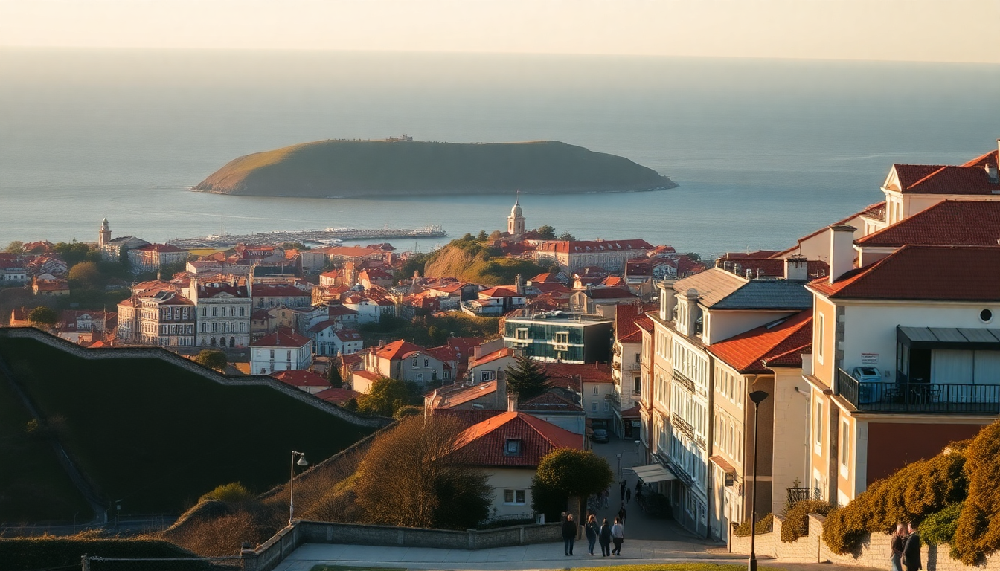

Where to Stay in Porto: Best Neighborhoods for Every Budget

I landed in Porto on a gray Tuesday morning, and within an hour I understood why people don’t shut up about this city. The hills are real, the port wine flows like tap water, and the neighborhoods aren’t just places to sleep — they shape your whole trip. Here’s where I’d actually stay, broken down by budget and vibe, so you don’t waste time scrolling through 200 hotel listings.
What’s the best neighborhood for first-timers on a mid-range budget?
Ribeira is the postcard district — colorful houses stacked along the Douro River, with the Dom Luís I Bridge looming overhead. It’s touristy, yes, but in a way that feels earned. We stayed at Hotel da Ribeira and could hear the port boats honking from our window. Great for walking to the port wine cellars in Vila Nova de Gaia (cross the lower bridge — it takes three minutes). Downside: it gets loud at night, and the cobblestone hills will punish your calves.
If you want the views without the crowds, try Cedofeita. It’s a ten-minute walk uphill from Ribeira, full of art galleries, cheap tascas, and quieter streets. We had dinner at Cantinho do Avillez (José Avillez’s casual spot) and liked it more than any riverfront restaurant. Hotels here cost about 20% less than Ribeira.
- Ribeira: best for atmosphere, worst for noise and hills
- Cedofeita: best for mid-range value, local restaurants like Casa Guedes (pork sandwich, don’t skip it)
- Hotel da Ribeira: solid mid-range, river views, book a room facing the river not the alley
Where should budget travelers stay without staying far from the action?
Bonfim is the answer. It’s one metro stop from São Bento station, but hotel prices drop by half compared to the center. We slept at Selina Porto — a hostel-hotel hybrid with clean dorms and private rooms, plus a rooftop bar that does cheap vinho verde. The neighborhood feels lived-in: laundromats, corner bakeries, and a Lidl for picnic supplies.
The 22 tram line runs through Bonfim and takes you directly to the river in fifteen minutes. For a proper budget meal, walk to Conga — a no-frills spot that serves the best bifana (pork cutlet sandwich) in the city for under €4. Avoid the tourist restaurants on Rua de Santa Catarina; they’re overpriced and the food is reheated.
- Selina Porto: private rooms from €40/night, rooftop bar, coworking space
- Conga: €3.50 bifana, open for lunch only, cash preferred
- Bonfim: connected by metro lines A, B, C, E, F — you’re never more than 15 minutes from anything
What’s the best neighborhood for luxury and romance?
Foz do Douro — the Atlantic coast neighborhood where Porto’s wealthy go to escape. It’s a 15-minute Uber from the center (€8), but it feels like a different country. We stayed at The Yeatman (technically in Vila Nova de Gaia, but it’s the same vibe) and had a room with a private hot tub overlooking the river. The spa there is exceptional — book the port wine bath experience.
Foz itself has wide promenades, seafood restaurants, and the Pérgola da Foz — a beautiful seaside walkway perfect for sunset. Dinner at Casa de Pasto was the best meal of our trip: grilled octopus with roasted potatoes, €25 for two courses. The trade-off is distance — you’ll need taxis or the 500 bus to reach central attractions.
- The Yeatman: Michelin-starred restaurant, infinity pool, views of Porto’s skyline
- Casa de Pasto: reservation required, ask for the table by the window
- Foz do Douro: quieter, windier, pricier — ideal for couples, not solo backpackers
Where do locals actually live, and should tourists stay there?
Campanhã is the real answer. It’s the working-class neighborhood east of the center, where the main train station is and where rents are still affordable. I wouldn’t recommend it for first-timers — it’s gritty, less walkable, and the nightlife is sparse. But if you’re on a shoestring and want to see Porto without the filter, stay at Oporto House Hostel (dorms from €15, private rooms from €30).
The best thing about Campanhã is the Mercado do Bolhão — a 15-minute walk away — where locals buy fresh produce, cheese, and cured meats. Grab a pastel de nata and a coffee at Manteigaria before exploring. The neighborhood is well-served by metro lines A and B, so you’re never stranded.
- Campanhã: cheapest accommodation, most authentic, least tourist infrastructure
- Oporto House Hostel: basic but clean, free walking tours from reception
- Mercado do Bolhão: don’t buy the pre-packaged port wine here — it’s overpriced
Which neighborhood is best for nightlife and foodies?
Rua de Cândido dos Reis (in the Santo Ildefonso district) is where Porto parties. It’s a narrow street packed with bars, small restaurants, and live fado houses. We stayed at Gallery Hostel — a boutique hostel with an art gallery in the lobby and a bar that stays open until 2 AM. The neighborhood is loud on weekends, but the energy is infectious.
For food, don’t miss Tapabento near São Bento station — it’s tiny, always has a queue, and serves the best seafood pasta I’ve ever eaten. Book a week ahead. For late-night snacks, Casa Guedes (same one from Cedofeita) stays open until midnight on Fridays. Avoid the tourist traps on Rua das Flores; they charge €15 for a Francesinha that’s worse than the €8 version at Brasão Cervejaria.
- Gallery Hostel: private rooms from €50, free port wine tasting at 6 PM
- Tapabento: reservation essential, €12-18 per main, cash only
- Rua de Cândido dos Reis: bars like Café do Cais and Ermesinde 1920 are local favorites
What about staying near the airport for a quick layover?
Don’t. The Porto metro runs from the airport to the city center in 30 minutes (line E, €2.50). If you have a late arrival or early departure, stay in Matosinhos — it’s halfway between the airport and the center, with a beach and some of the best seafood in Portugal. We booked Hotel Oceanus for €60 and walked to Tasco for grilled sardines at 10 PM.
Matosinhos is not a tourist neighborhood — it’s a fishing town that happens to be connected to Porto by metro. The Mercado de Matosinhos has a food hall that’s cheaper and less crowded than Porto’s tourist markets. If you have a full day, take the 500 bus along the coast to Foz — it’s a scenic 20-minute ride.
- Hotel Oceanus: basic but clean, 10-minute walk to the beach
- Tasco: €8 for a plate of grilled sardines, bread, and olives
- Matosinhos: best for seafood, worst for nightlife — bring a book
FAQ
Is it better to stay in Porto or Vila Nova de Gaia? Gaia has the port wine cellars and incredible views of Porto’s skyline, but it’s quieter and less convenient for restaurants and nightlife. Stay in Gaia if you want a romantic, wine-focused trip and don’t mind crossing the bridge for dinner. Stay in Porto (Ribeira or Cedofeita) if you want walkable access to everything.
How many days should I spend in Porto? Three full days is the sweet spot. Day one: Ribeira, Gaia, and a port tasting. Day two: Livraria Lello (book tickets online), Clérigos Tower, and a Francesinha dinner. Day three: a day trip to Douro Valley or the beach in Matosinhos. Anything less feels rushed.
What’s the best way to get around Porto? The metro and trams cover most neighborhoods. A rechargeable Andante card costs €0.60 and single rides are €1.20. Uber is cheap (€5-8 across the city). Avoid renting a car — parking is a nightmare and the hills are brutal.
Conclusion
- Ribeira for first-timers who want the classic view, but brace for noise and crowds.
- Cedofeita for mid-range value, art galleries, and better food than the riverfront.
- Bonfim for budget travelers who don’t mind a 15-minute metro ride to the center.
- Foz do Douro for luxury, romance, and ocean views — but expect to Uber everywhere.
- Matosinhos for layovers and seafood lovers who want to skip tourist prices.